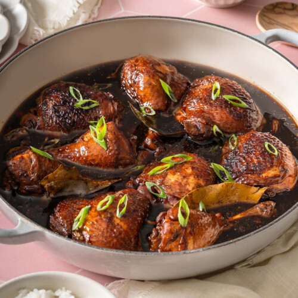

Adobong Manok

Ingredients:
- 1 1/2 pounds boneless, skinless chicken thighs or legs, cut into bite-sized pieces
- 1/2 cup vinegar
- 1/4 cup soy sauce
- 2 tablespoons fish sauce (optional)
- 2 cloves garlic, minced
- 1 tablespoon grated ginger
- 1 teaspoon ground black pepper
- 1/2 teaspoon salt
- 2 bay leaves
- 1/4 cup water
- Cooking oil or butter for frying
Instructions:
- Heat oil or butter in a large saucepan over medium heat.
- Add the garlic and ginger and sauté until fragrant.
- Add the chicken and cook until browned on all sides.
- Add the vinegar, soy sauce, fish sauce (if using), pepper, and salt. Stir to combine.
- Add the bay leaves and water, and bring the mixture to a boil.
- Reduce the heat to low and simmer, covered, for 30-40 minutes or until the chicken is cooked through.
- Remove the bay leaves and serve the Adobong Manok hot with steamed rice.
- Note: You can also cook the Adobong Manok in a slow cooker. Brown the chicken and cook the garlic and ginger in
a pan, then transfer everything to the slow cooker with the remaining ingredients and cook on low for 6-8 hours.